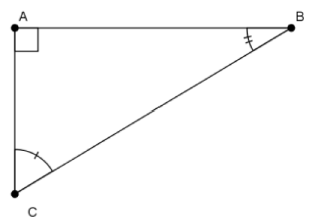
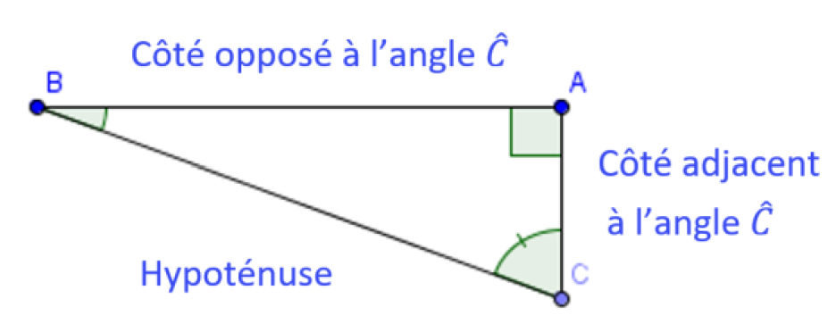
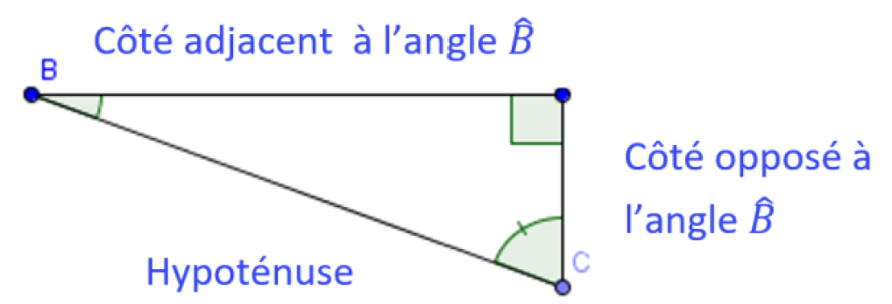
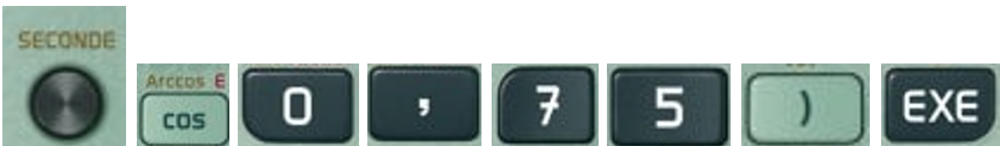
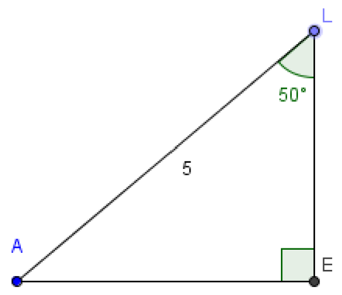
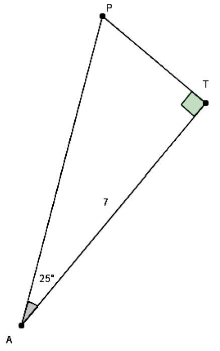
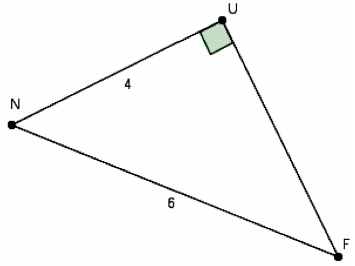

Chapitre 8 : Cosinus d'un angle aigu
I. Rappels et vocabulaire
Propriété : Dans un triangle rectangle, les deux angles aigus sont complémentaires (leur somme fait 90°).
Vocabulaire : Soit ABC un triangle rectangle en A
• [BC] est l'hypoténuse du triangle ABC
• [AB] est le côté opposé à l'angle C et le côté adjacent à l'angle B.
• [AC] est le côté opposé à l'angle B et le côté adjacent à l'angle C.

Ainsi :
Pour l'angle C

Pour l'angle B

II. Cosinus d'un angle aigu d'un triangle rectangle
Définition : Soit un triangle ABC rectangle en A. Le cosinus de l'angle ABC est le quotient de la longueur du côté adjacent à l'angle ABC par la longueur de l'hypoténuse :
cos ABC = côté adjacent à l'angle ABChypoténuse du triangle ABC
Remarque : Le cosinus d'un angle est donc inférieur à 1 (l'hypoténuse est plus grande que les deux autres côtés).
III. Cosinus et calculatrice
Avant tout calcul, il faut se placer en mode degré sur la calculatrice.
1) Calculer la valeur d'un cosinus lorsque l'on connaît la valeur de l'angle
Exemple : Pour calculer cos 30°
À la calculatrice je dois taper :
Avec la Casio : 
Avec la TI :
Ainsi cos 30° = 32 ≈ 0,87
2) Calculer la valeur d'un angle connaissant le cosinus
Exemple : Pour calculer la mesure de l'angle ABC tel que cos ABC = 0,75
À la calculatrice je dois taper :
Avec la Casio :

Avec la TI :
Ainsi ABC ≈ 41,4°
IV. Exemples d'utilisation
1) Calcul de la longueur du côté adjacent à un angle connu
Énoncé :
On considère un triangle LEA rectangle en E tel que LA = 5 cm et ELA = 50°.
Calculer la longueur du côté [LE] arrondie au millimètre.

Le triangle LEA est rectangle en E donc :
cos ELA = LELA
cos 50° = LE5
LE = cos 50° × 5
LE ≈ 3,2 cm
2) Calcul de la longueur de l'hypoténuse
Énoncé :
On considère un triangle PAT rectangle en T tel que AT = 7 cm et PAT = 25°.
Calculer la longueur du côté [PA] arrondie au millimètre.

Le triangle PAT est rectangle en T donc :
cos PAT = ATAP
cos 25° = 7AP
AP = 7cos 25°
AP ≈ 7,7 cm
3) Calculer la mesure d'un angle
Énoncé :
Soit FUN un triangle rectangle en U tel que NF = 6 cm et UN = 4 cm.
Calculer la mesure de l'angle UNF arrondie au degré. Déduis-en la valeur approchée au degré près de la mesure de l'autre angle aigu du triangle.

Le triangle FUN est rectangle en U donc :
cos UNF = UNNF
cos UNF = 46
À la calculatrice, UNF ≈ 48°
Ainsi, UFN = 90° − 48° = 42°